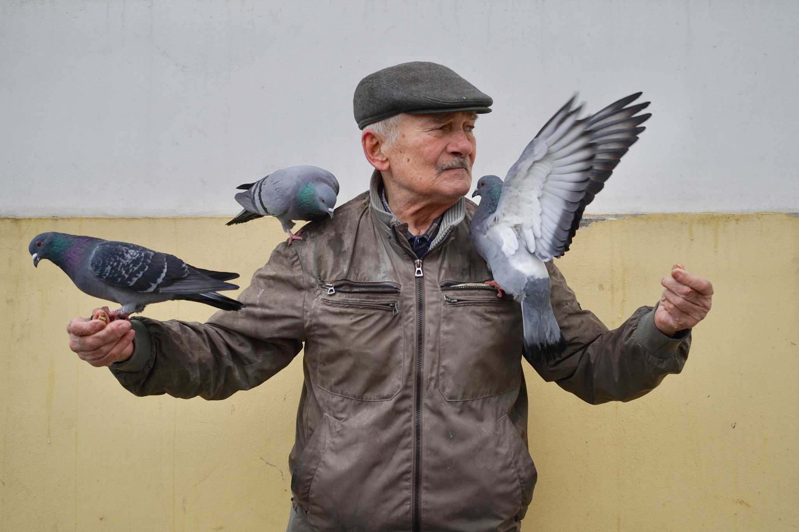

Голуби большого города: как пернатые соседи делают улицы лучше
В каждом мегаполисе есть свои тайные жители: беззвучные, пушистые и чуть-чуть шутливые. Этот лонгрид расскажет, какие истории прячут городские голуби и почему они заслуживают хотя бы минуты нашего внимания.
1. Почему в городе живут голуби?
Голуби — это одна из самых старых городских птиц. Ещё в античности люди приучали их к домам, а сегодня городская среда стала для них вкуснее и удобнее, чем дикие леса. Тут есть крыши, скворечники, хлебные крошки и люди, готовые посмотреть на пернатого приятеля.
Но для большинства горожан голуби — это настоящие соседи. Они встречают на площади, сопровождают к кафе и иногда улетают, будто проверяют: ты случайно не забыл улыбнуться?
2. Три истории из разных городов
Голуби есть в Нью-Йорке, Лондоне, Москве и даже в Токио. У каждого города свой характер, но везде есть похожие привычки: любить людей, любить «перекус на ходу» и любить места, где тепло.

120 000примерно столько городских голубей живёт в Москве
600 000оценочная численность голубей в Нью-Йорке
3количество странных, но добрых историй о голубях, собранных в этом разделе
1сторис-карточка 9:16 для быстрого знакомства с темой
Самый интересный факт: в одном парке Лондона голуби стали «секретными охранниками» пикника. Они показывали, где стоят свежие крошки, и при этом не требовали ничего взамен, кроме одной свободной лавочки.
В Токио у голубей появилось имя «хикари» — «свет». Они так часто появляются на мосту во время заката, что туристы приходят специально посмотреть на «светящихся» голубей. В Москве легенда гласит, что если голубь сядет на голову рядом с красной площадью, то день будет добрым.
Плотность голубей в городах
Нью-Йорк
600 000
Стамбул
420 000
Париж
250 000
Токио
180 000
Москва
120 000
3. Как понять городского голубя и подружиться с ним
Голубей легко понять, если смотреть на них как на соседей, а не как на проблему. Они прилетают туда, где есть внимание, еда и немного тени. И они умеют рассмешить: вдруг ты сидишь в трамвае, а голова сидящего перед тобой голубя глядит в окно — словно он проверяет маршрут.
Здесь важны три простые правила:
не кормите их чипсами и печеньем,
оставляйте место для птиц в парках и на набережных,
посмотрите на них как на часть городской жизни, а не как на мусор.
Если говорить о забавных наблюдениях, то голуби больше всего любят:
фонтанные площадки;
зоны с уличными музыкантами;
крыши, где солнечно и тихо;
городские рынки, где всегда есть крошки.
Любимые места городских голубей
Парки
38%
Площади
27%
Рынки
18%
Набережные
11%
Другие
6%
4. Почему это доброе и немного шутливое
Голуби в городе — не герои эпоса, но они несут с собой маленькое добро. Они учат нас делиться вниманием, не спешить и улыбаться в самый серый дождливый день. А ещё они оказываются отличными «квестовыми персонажами»: если хочешь найти яйцо, нужно внимательно смотреть по сторонам за таблицами, витринами и цветочными ящиками.
В долгой истории о городе голубь показывает, что даже самая привычная улица может стать чуть более доброй. И если мы посмотрим на него не как на проблему, а как на живую часть городской сцены, то город действительно станет лучше.